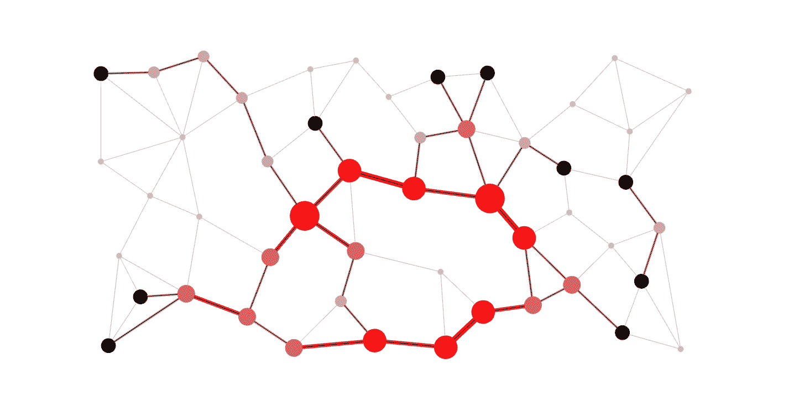
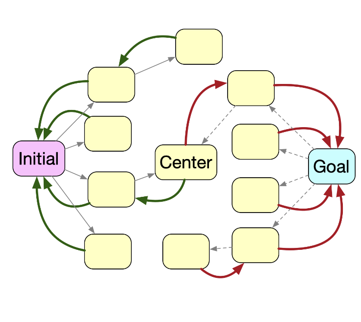
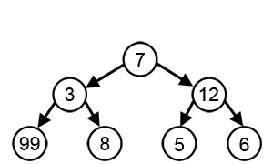
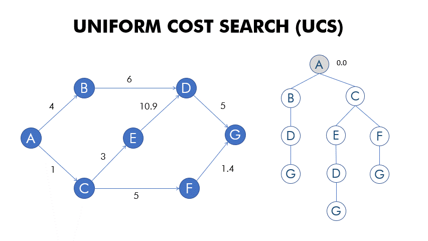
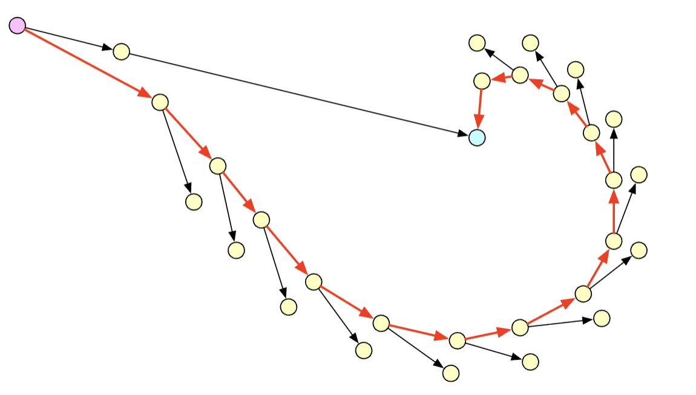
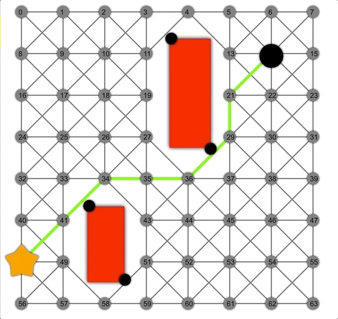
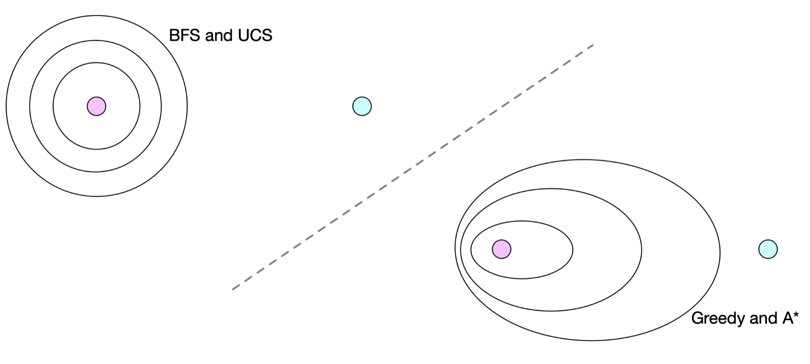
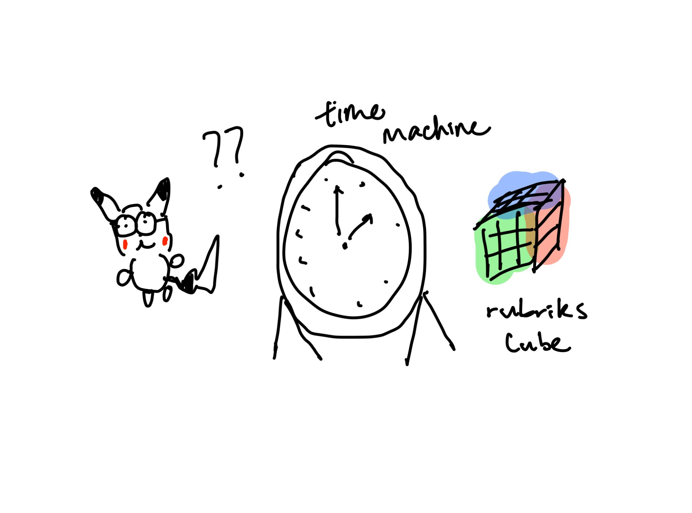

Over time we will solve rubik's cubes faster and faster. Soon we will be able to solve rubik's cubes in negative time. Legend if we solve a rubik's cube fast enough we can travel back and time. Bad actors travel back in time to do bad stuff Pikachu knows this - and is going to prevent the creation of the rubik's cube to save the world.
So how do we search for the goal state $G$? There are many different ways. I will outline the popular ones with their psuedocode below.

Go level by level / expand evenly from some original source node ($s_0$) until reaching $G$. When doing this, we build a backtracking table to remember which path we took. This is first in first out (FIFO) using a queue. In this case, with an unweighted graph, we are guaranteed to find the optimum since we visit the shallowest nodes first.
$$ \begin{array}{l} \mathbf{define}\; bfs(): \\[4pt] \qquad \begin{aligned} &\mathbf{if}\; Goal(s_0),\; \mathbf{return}\; [] \\[4pt] &q \;=\; \text{new Queue},\; bt \;=\; \text{new Map} \\[4pt] &q.\text{push\_back}(s_0),\; bt[s_0] = (\text{None},\text{None}) \\[4pt] &\mathbf{while}\; q\;\text{is not empty}: \\[4pt] &\qquad s = q.\text{pop\_front}() \\[4pt] &\qquad \mathbf{for\ all}\; a\;\text{in}\; A(s): \\[4pt] &\qquad\qquad s' = T(a, s) \\[4pt] &\qquad\qquad \mathbf{if}\; s'\;\text{is in}\; bt,\; \mathbf{continue} \\[4pt] &\qquad\qquad bt[s'] = (a, s) \\[4pt] &\qquad\qquad \mathbf{if}\; Goal(s'),\; \mathbf{return}\; backtrack(s_0, s', bt) \\[4pt] &\qquad\qquad q.\text{push\_back}(s') \\[4pt] &\mathbf{return}\; \text{failure} \end{aligned} \end{array} $$
Upon finding the goal state, we can backtrack for the path:
$$ \begin{aligned} &\mathbf{define}\; backtrack(s_0, s_f, bt): \\[4pt] &\qquad q = \text{new List} \\[4pt] &\qquad s = s_f \\[4pt] &\qquad \mathbf{while}\; s \neq s_0: \\[4pt] &\qquad\qquad (a, s) = bt[s] \\[4pt] &\qquad\qquad q.\text{push\_front}(a) \\[4pt] &\qquad \mathbf{return}\; q \end{aligned} $$

Notice how BFS has a time complexity of $O(b^x)$. We already know that the solved state of a rubik's cube is when all colors are the same on each side. So we already know where and what the goal is. We just don't know the path to get there. With bidirectional, we can start at the goal AND initial states and try to connect both ends. The branch out from each is called a frontier. We are looking for a frontier match using a front $s_0$ / back $G$, resulting in time complexity of $2b^{\frac{n}{2}}$.
$$ \begin{aligned} &\mathbf{define}\; bidirectional\_bfs(s_0, G): \\[4pt] &\qquad q_f.\text{push\_back}((s_0, 0)),\; bt_f[s_0] = (\text{None}, 0),\; q_b.\text{push\_back}((G, 0)),\; bt_b[G] = (\text{None}, 0) \\[4pt] &\qquad \mu = \infty \\[4pt] &\qquad \mathbf{while}\; q_f\;\text{and}\; q_b\;\text{are not empty}: \\[4pt] &\qquad\qquad \mathbf{if}\; forward.\text{peek}[1] + backward.\text{peek}[1] \ge \mu,\; \mathbf{break} \\[4pt] &\qquad\qquad \text{Alternate between forward and backward search} \\[4pt] &\qquad\qquad (node, cost) = queue.\text{pop}() \\[4pt] &\qquad\qquad \mathbf{for\ all}\; child \in A(node): \\[4pt] &\qquad\qquad\qquad \mathbf{if}\; child\;\text{is in}\; bt,\; \mathbf{continue} \\[4pt] &\qquad\qquad\qquad bt[child] = (node, cost + 1) \\[4pt] &\qquad\qquad\qquad \mathbf{if}\; child\;\text{is in opposite } bt\;\mathbf{and}\;\text{distance through child} < \mu: \\[4pt] &\qquad\qquad\qquad\qquad center = child \\[4pt] &\qquad\qquad\qquad\qquad \mu = \text{distance through child} \\[4pt] &\qquad\qquad\qquad \mathbf{else}\; queue.\text{push}((child, cost + 1)) \\[4pt] &\qquad \mathbf{if}\; center = \text{None}:\; \mathbf{return}\; \text{failure} \\[4pt] &\qquad \text{Use } bt_f \text{ and } bt_b \text{ to recover actions from } s_0 \text{ through } center \text{ to } G \end{aligned} $$
Be aware that we should not break too early. We only break if $n_f + n_b \ge \mu$. $n_f$ and $n_b$ represents the depth of frontier front and back respectfully. $\mu$ represents our current best complete path $n_f + n_b$ of some previous path. Because BFS goes level by level, if our new path depth doesn't shrink, then we know we already found our minimum.

What if we swap the FIFO queue for a last in first out (LIFO) stack? We get depth first search (DFS). In DFS, we explore one path as deeply as possible and then go to another if it doesn't work out. This means the solution we find might not be the optimum.
$$ \begin{array}{l} \mathbf{define}\; dfs(): \\[4pt] \qquad \begin{aligned} &\mathbf{if}\; Goal(s_0),\; \mathbf{return}\; [] \\[4pt] &q = \text{new Stack} \\[4pt] &q.\text{push}((s_0, [])) \\[4pt] &\mathbf{while}\; q\;\text{is not empty}: \\[4pt] &\qquad (s, path) = q.\text{pop}() \\[4pt] &\qquad \mathbf{for\ all}\; a\;\text{in}\; A(s): \\[4pt] &\qquad\qquad s' = T(a, s) \\[4pt] &\qquad\qquad p' = path + [a] \\[4pt] &\qquad\qquad \mathbf{if}\; Goal(s'),\; \mathbf{return}\; p' \\[4pt] &\qquad\qquad q.\text{push}((s', p')) \\[4pt] &\mathbf{return}\; \text{failure} \end{aligned} \end{array} $$

Run DFS repeatedly at increasing depth limits $d$. This caps the max depth $m$ to $d$ where $d \ll m$. This is useful because we have the same time complexity as BFS but better space complexity.

What if we take a greedy approach: let's use the closest of the states. This means we need a sorted data structure to take the closest. We can use a priority queue (min heap) to do this.
$$ \begin{array}{l} \mathbf{define}\; best\_first(): \\[4pt] \qquad \begin{aligned} &\mathbf{if}\; Goal(s_0),\; \mathbf{return}\; [] \\[4pt] &q = \text{new PriorityQueue},\; bt = \text{new Map} \\[4pt] &q.\text{push}((s_0, 0)),\; bt[s_0] = (\text{None},\text{None}) \\[4pt] &\mathbf{while}\; q\;\text{is not empty}: \\[4pt] &\qquad s = q.\text{pop}() \\[4pt] &\qquad \mathbf{for\ all}\; a\;\text{in}\; A(s): \\[4pt] &\qquad\qquad s' = T(a, s) \\[4pt] &\qquad\qquad \mathbf{if}\; s'\;\text{is in}\; bt,\; \mathbf{continue} \\[4pt] &\qquad\qquad bt[s'] = (a, s) \\[4pt] &\qquad\qquad \mathbf{if}\; Goal(s'),\; \mathbf{return}\; backtrack(s_0, s', bt) \\[4pt] &\qquad\qquad d = \text{estimated\_distance\_to\_nearest\_goal}(s') \\[4pt] &\qquad\qquad q.\text{push}((s', d)) \\[4pt] &\mathbf{return}\; \text{failure} \end{aligned} \end{array} $$
The problem is that rubik's cubes rotations are not the same. You notice that there is different friction coefficients associated with each side. Your machine is able to pick up the costs associated with each turn. Now we need different methods to search for our state.

UCS, or uniform cost search is BFS but sorted by path cost (using a min heap / priority queue) instead of depth.
$$ \begin{array}{l} \mathbf{define}\; ucs(): \\[4pt] \qquad \begin{aligned} &bt = \text{new Map},\; visited = \text{new Set} \\[4pt] &q = \text{new PriorityQueue} \\[4pt] &q.\text{insert}((s_0, 0)) \\[4pt] &\mathbf{while}\; (s, c) = q.\text{pop}(): \\[4pt] &\qquad \mathbf{if}\; Goal(s),\; \mathbf{return}\; backtrack(s, bt) \\[4pt] &\qquad visited.\text{add}(s) \\[4pt] &\qquad \mathbf{for\ all}\; a\;\text{in}\; A(s): \\[4pt] &\qquad\qquad (s', c') = T(a, s) \\[4pt] &\qquad\qquad \mathbf{if}\; s'\;\in\; visited,\; \mathbf{continue} \\[4pt] &\qquad\qquad cost = c + c' \\[4pt] &\qquad\qquad \mathbf{if}\; q.\text{insert\_or\_decrease}(s', cost): \\[4pt] &\qquad\qquad\qquad bt[s'] = (a, s) \\[4pt] &\mathbf{return}\; \text{failure} \end{aligned} \end{array} $$
Similar to bidirectional BFS, we can do bidirectional UCS:
$$ \begin{array}{l} \mathbf{define}\; bidirectional\_ucs(): \\[4pt] \qquad \begin{aligned} &\text{Create } bt,\; queue,\; visited \text{ for forward and backward } (bt[state] = (prev, cost)) \\[4pt] &\mathbf{while}\; \text{forward and backward queues are not empty}: \\[4pt] &\qquad \text{Alternate between popping } s \text{ from forward and backward queues} \\[4pt] &\qquad \text{Add } s \text{ to visited, let } c \text{ be cost to get to } s \\[4pt] &\qquad \mathbf{for\ all}\; neighbor, t\;\text{in}\; s.\text{actions}: \\[4pt] &\qquad\qquad \mathbf{if}\; neighbor \in other.bt: \\[4pt] &\qquad\qquad\qquad r = c + t + other.bt[neighbor][1] \\[4pt] &\qquad\qquad\qquad \mathbf{if}\; r < \mu: \\[4pt] &\qquad\qquad\qquad\qquad bridge = (s, neighbor)\; (\text{or reverse}),\; \mu = r \\[4pt] &\qquad\qquad \mathbf{else}: \\[4pt] &\qquad\qquad\qquad \mathbf{if}\; c + t < bt[neighbor][1],\; \text{update } bt \text{ and queue} \\[4pt] &\qquad \mathbf{return}\; backtrack(fbt, rbt, bridge) \end{aligned} \end{array} $$
We will also backtrack:
$$ \begin{array}{l} \mathbf{define}\; backtracking(fbt, rbt, bridge): \\[4pt] \qquad \begin{aligned} &result = [] \\[4pt] &s = bridge[0] \\[4pt] &\mathbf{while}\; s \neq \text{None}: \\[4pt] &\qquad result.\text{push\_front}(s) \\[4pt] &\qquad s = fbt[s][0] \\[4pt] &s = bridge[1] \\[4pt] &\mathbf{while}\; s \neq \text{None}: \\[4pt] &\qquad result.\text{push\_back}(s) \\[4pt] &\qquad s = rbt[s][0] \\[4pt] &\mathbf{return}\; result \end{aligned} \end{array} $$

Note that for algorithms that use some sort of priority, being greedy can mean taking a bunch of short routes that add up to an objectively longer route. Try not to get baited.

A* is an extension of UCS but with a heuristic $h(n)$. If UCS provides the actual cost $g(n)$ from start to n, then A* priority is sorted by $f(n) = g(n) + h(n) = \text{UCS + heuristic}$. UCS is A* with a heuristic of 0 for each action (no heuristic).
$$ \begin{array}{l} \mathbf{define}\; a\_star(): \\[4pt] \qquad \begin{aligned} &q = \text{new PriorityQueue},\; bt = \text{new Map} \\[4pt] &q.\text{insert}((s_0, 0 + h(s_0))),\; bt[s_0] = (\text{NoState}, \text{NoAction}, 0) \\[4pt] &\mathbf{while}\; (s, \_) = q.\text{pop}(): \\[4pt] &\qquad \mathbf{if}\; Goal(s),\; \mathbf{return}\; backtrack(s, bt) \\[4pt] &\qquad (\_, \_, g) = bt[s] \\[4pt] &\qquad \mathbf{for\ all}\; a\;\text{in}\; A(s): \\[4pt] &\qquad\qquad (s', c') = T(a, s) \\[4pt] &\qquad\qquad cost = g + c' \\[4pt] &\qquad\qquad \mathbf{if}\; s'\;\notin\; bt\;\mathbf{or}\; cost < bt[s'].\text{cost}: \\[4pt] &\qquad\qquad\qquad estimate = cost + h(s') \\[4pt] &\qquad\qquad\qquad q.\text{insert\_or\_decrease}(s', estimate) \\[4pt] &\qquad\qquad\qquad bt[s'] = (a, s, cost) \\[4pt] &\mathbf{return}\; \text{failure} \end{aligned} \end{array} $$
This allows the search contour for A* to look skewed. This is because A* knows that it should search certain paths more because of the heuristic. It is kind of like a trained sniffer dog searching for leads. While UCS searches the cheapest, it searches pretty uniformly.

A* will always get the cheapest route if heuristic, $h(n)$ is admissible*.
Admissible means that it will never overestimate the cost: $$ h^*(s) = \text{remaining cost to goal} \\ h(n) \le h^*(n) \quad \forall n $$ In other words our heuristic shouldn't make us think a good path is bad.
A consistent heuristic or monotonic heuristic means our heuristic does not contradict neighbors: $$ h(N) \le c(N, P) + h(P) \quad \text{triangle inequality} $$ This means that for a heuristic to be consistent, for some node $N$, the priority must be less than the cost from $N$ to another node $P$ + heuristic for $P$. In other words, our heuristic estimate should not suddenly improve more than the cost of that step.
There are 2 types of heuristics for searching:
$$ \begin{array}{l} \mathbf{define}\; bidirectional\_a\_star(): \\[4pt] \qquad \begin{aligned} &\text{Create } bt,\; queue \text{ for forward and backward } (bt[state] = (prev, cost)) \\[4pt] &\mathbf{while}\; \text{forward\_queue and backward\_queue are not empty}: \\[4pt] &\qquad \text{Pop } s \text{ from the queue with lowest priority} \\[4pt] &\qquad \text{Let } c \text{ be cost to get to } s \\[4pt] &\qquad \mathbf{for\ all}\; neighbor, t\;\text{in}\; s.\text{actions}: \\[4pt] &\qquad\qquad \mathbf{if}\; neighbor \in other.bt: \\[4pt] &\qquad\qquad\qquad r = c + t + other.bt[neighbor][1] \\[4pt] &\qquad\qquad\qquad \mathbf{if}\; r < \mu: \\[4pt] &\qquad\qquad\qquad\qquad bridge = (s, neighbor)\; (\text{or reverse}),\; \mu = r \\[4pt] &\qquad\qquad \mathbf{else}: \\[4pt] &\qquad\qquad\qquad \mathbf{for\ all}\; x \in other.queue: \\[4pt] &\qquad\qquad\qquad\qquad \text{Update priority for } x \text{ using } bt[neighbor] + h(neighbor, x) + other.bt[x] \\[4pt] &\qquad\qquad\qquad\qquad \text{Note shortest estimate as } p \\[4pt] &\qquad\qquad\qquad \text{Update (if necessary) neighbor's place in queue using } p \\[4pt] &\qquad\qquad\qquad \text{Update (if necessary) } bt[neighbor] \text{ using } c + t \\[4pt] &\qquad \mathbf{return}\; backtrack(fbt, rbt, bridge) \end{aligned} \end{array} $$
Unfortunately, after a LOT of research, Pikachu was unable to find a search algorithm fast enough to travel back in time. This is still an area of active research so Pikachu will keep looking.

{kind=link}
{kind=link}